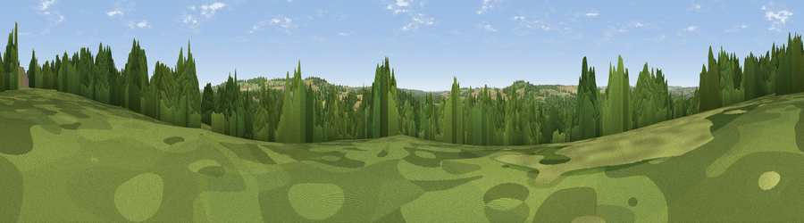

Viewpoint near Alderbury
#37755 in England · top 64% of its area beats it · near AlderburyThe view, rendered

A 360° render of this exact spot computed from the terrain model, tree cover and land cover — summer colours, afternoon light, calibrated against photographs of famous viewpoints. Real trees, hedges and buildings will differ in detail.
The panorama
Grey silhouette: terrain skyline in each direction (720 bearings, Earth curvature and refraction included). Dashed green: skyline with trees (+15 m) and buildings (+8 m) as obstacles. Blue strip: how far the ground is visible on each bearing.
Where the view opens
Wedge length = distance to the farthest visible ground on that bearing (vegetation-aware). Rings at 10, 25 and 50 km.
What fills the view
37% woodland · 37% grassland · 22% cropland · 3% built-up
Angular shares of the visible panorama (visual magnitude), not map area. Landscape diversity 0.52 (0–1 Shannon).
Key numbers
More beautiful places nearby
The staircase of upgrades: each row has a higher view potential than everything closer. Driving times are estimates from straight-line distance, calibrated against real road routing — check an actual route before setting out.
| Place | Direction | Drive | Score |
|---|---|---|---|
| Viewpoint near Alderbury | NNW · 2 km | ~4 min | 39.9 |
| Viewpoint near West Grimstead | SE · 3 km | ~7 min | 57.0 |
| Viewpoint near West Grimstead | SE · 3 km | ~8 min | 62.7 |
| Viewpoint near Bulford | N · 16 km | ~28 min | 70.3 |
| Monk's Down | WSW · 26 km | ~42 min | 74.4 |
| Viewpoint near Berwick St John | WSW · 27 km | ~43 min | 78.2 |
| West High Down | SSE · 44 km | ~64 min | 79.8 |
| Tennyson Down | SSE · 44 km | ~64 min | 83.2 |
51.04094, -1.73715 · source: screening · position refined by local search. Computed location — check access rights before visiting.